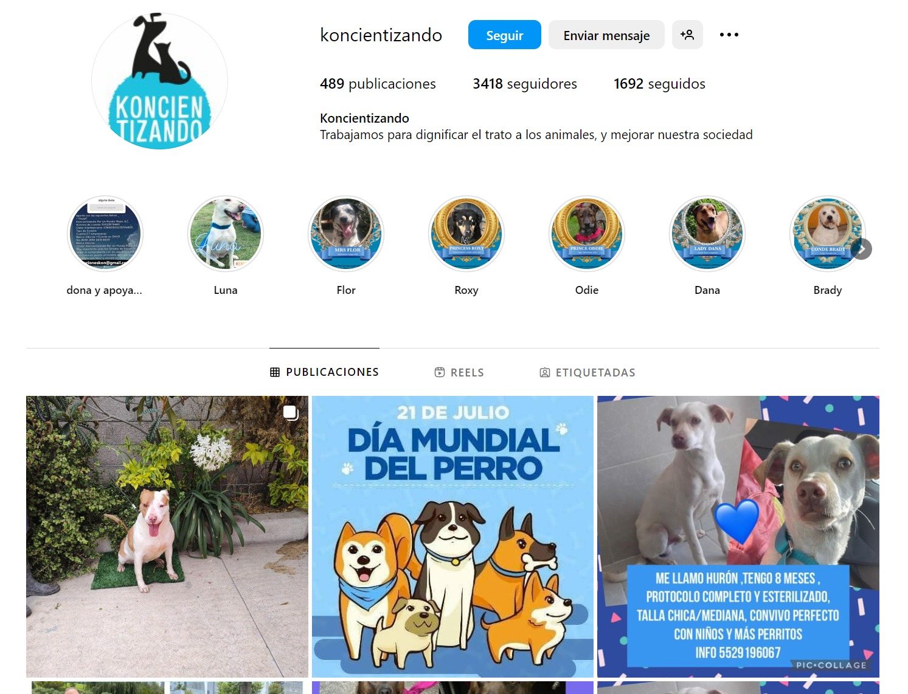
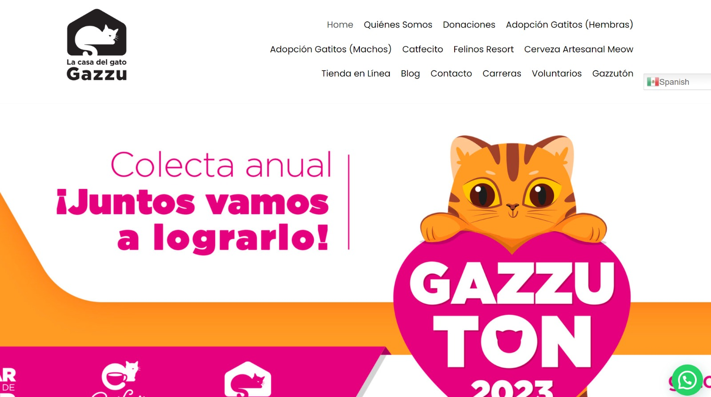

Animal protection association that collaborates with the Secretariat of Public Security via the Animal Surveillance Brigade. They carry out clinical and ethological rehabilitation work to reintegrate animals into homes where they are cared for and loved.
Non-profit civil association, helps more than 300 homeless cats a year. They obtain funds from various projects they carry out, among them is their cat-café (Catfecito), where diners can live with the cats under their care and even adopt them.
